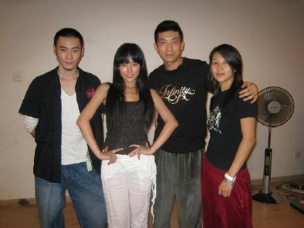
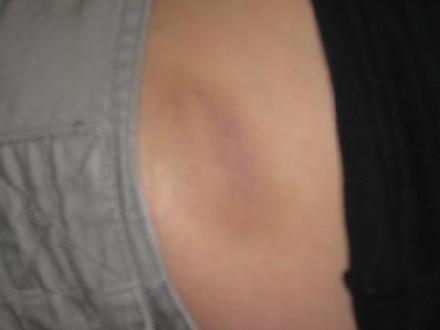

在北京宣传的期间,我每天从早到通告都排的满满,电台访问,自己的发布会还有新浪歌会还要电台的节目.....好多好多,忙得每天只吃一顿.最惨的就每天忙完所有的事情之后已经是9点多了,再吃好晚饭就是10点多...最想倒头就睡的时候,我居然还要去接受最魔鬼式的训练,那就是练舞....每天去之前我都会对自己说:"拼了",因为真的很累很累了...还好我的舞蹈老师们跳舞都一级棒...每天和他们一起跳舞的时候都很开心,都会忘记所有的疲劳...跳舞真的好开心啊....
他们都是我的舞蹈老师,每天晚上他们都会陪着我一起练舞....超级感动


在北京的最后一晚洗澡的时候,我发现我的胯两边多两快很大淤青快...555当时怎么都想不起是哪里弄来的,后来我们王老板告诉我,原来真的是我跳舞的时候太猛了,太用力了,把自己打成这样都不知道